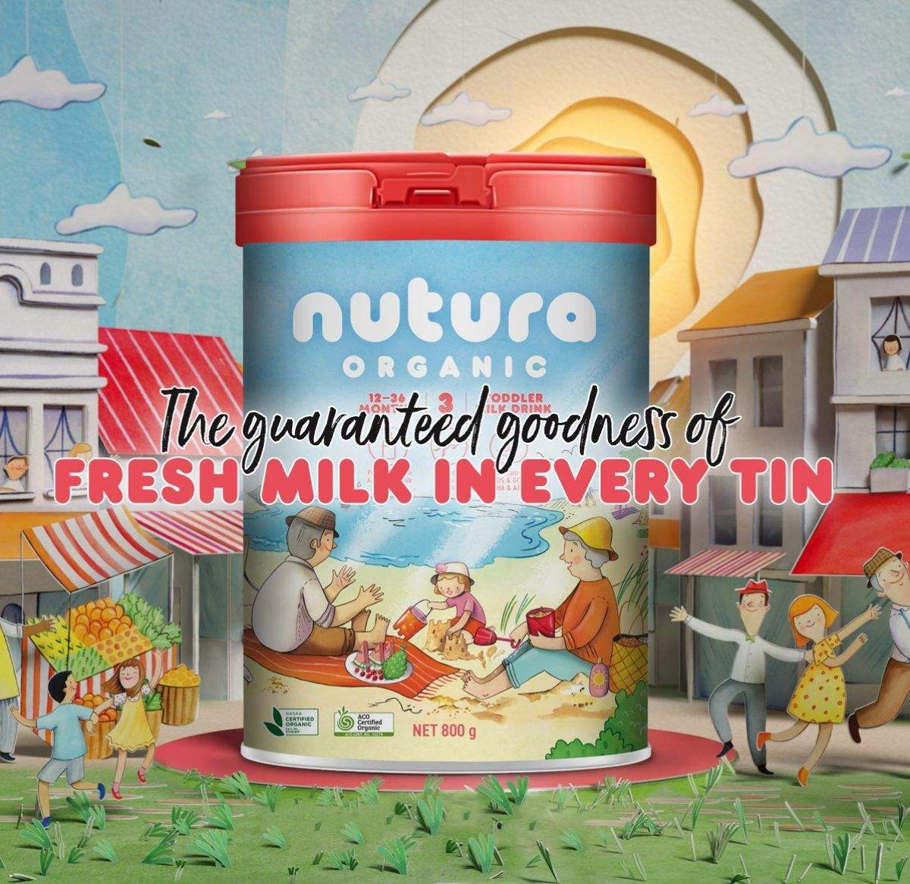

Công thức sữa tươi hữu cơ cao cấp từ Úc giúp giữ trọn vẹn sự tinh túy tự nhiên trong từng giọt sữa! Quy trình chế biến độc quyền bảo toàn các protein hoạt tính sinh học quý giá như Lactoferrin và Kháng thể tự nhiên Immunoglobulins (IgG).

Tất cả bắt đầu từ những người nông dân Úc uy tín và nguồn sữa tươi thu hoạch từ đàn bò ăn cỏ tự nhiên trên các thung lũng xanh mướt của bang Victoria. Nguồn sữa chất lượng hàng đầu thế giới, được kiểm định nghiêm ngặt không chứa bất kỳ tạp chất hóa học nào.
Nutura sử dụng nền tảng là sữa tươi thu hoạch trực tiếp tại trang trại (Farmgate Milk), hoàn toàn KHÔNG dùng sữa bột hoàn nguyên sấy 2 lần như hầu hết các dòng sữa công thức công nghiệp thông thường. Điều này giúp bảo toàn tối đa cấu trúc tự nhiên của protein và hạt cầu chất béo.
Quy trình trộn ướt Wet Blending và sấy phun 1 lần ở nhiệt độ tối ưu giúp giữ lại Lactoferrin và Kháng thể IgG tự nhiên. Kết hợp cùng Vitamin C, Kẽm và Sắt, Nutura mang lại hệ miễn dịch kiên cố giúp bé tự do khám phá thế giới.
Nutura Organic sở hữu dữ liệu phân tích độc lập chứng minh rằng quy trình 'Nutura Fresh Milk' bảo tồn nhiều protein có hoạt tính sinh học hơn đáng kể so với quy trình sản xuất sữa công thức truyền thống.
Nghiên cứu độc lập được thực hiện bởi The Australian Proteome Analysis Facility (APAF) tại Đại học Macquarie (Úc) đã xác nhận nồng độ vượt trội của các protein sinh học tự nhiên trong sữa Nutura.
Kháng thể tự nhiên bảo vệ trẻ sơ sinh khỏi nhiễm khuẩn
Lactoferrin là gì? Đây là một glycoprotein liên kết sắt đa chức năng được tìm thấy tự nhiên trong sữa mẹ và sữa non của động vật có vú. Nồng độ Lactoferrin trong sữa non của mẹ rất cao (7 - 9 g/L) và duy trì ở mức 1 - 3 g/L trong các tháng tiếp theo. Vai trò sinh học tiên quyết của Lactoferrin là bảo vệ em bé sơ sinh khỏi vi khuẩn, virus và kích hoạt hệ miễn dịch ban sơ.
Kháng thể miễn dịch bảo vệ đường ruột non nớt của trẻ
Kháng thể IgG là gì? Immunoglobulin (kháng thể) là các phân tử protein phức hợp lớn do tế bào bạch cầu tạo ra để nhận diện, khóa chặt và tiêu diệt các kháng nguyên ngoại lai (vi khuẩn, virus gây bệnh). Trong sữa bò tươi và sữa mẹ, IgG chiếm tỷ lệ cao nhất và có ý nghĩa sống còn đối với miễn dịch thụ động của trẻ nhỏ.
Nhờ công nghệ sấy phun 1 lần ở nhiệt độ kiểm soát chính xác, các phân tử IgG trong sữa Nutura giữ nguyên được cấu trúc 3 chiều nhạy cảm, không bị phá hủy hay biến tính như trong quá trình sấy khô 2 lần ở các loại sữa bột thông thường.
Hãy để bé yêu khởi đầu với nguồn dinh dưỡng thanh mát chuẩn tự nhiên nhất.